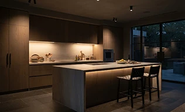
01Lighting
Circadian lighting scenes that follow the sun — dimmed for focus, warmed for evenings, gone entirely at night.
Services & architectural engineering
We design, engineer, and commission integrated low-voltage systems that disappear into the architecture — delivering effortless control over light, climate, sound, and security.
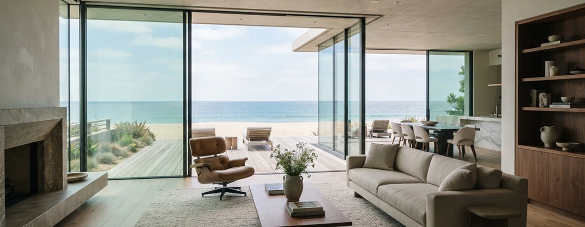
Autonomous biological spectrum tuning synchronized to coastal twilight solar geometry.
Services

01Circadian lighting scenes that follow the sun — dimmed for focus, warmed for evenings, gone entirely at night.
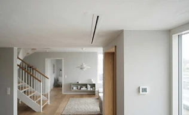
02Heating and cooling that learns your rhythm, room by room, cutting energy use without you ever touching a dial.
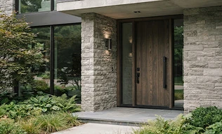
03Access control, cameras and monitoring unified behind one interface — awake when you’re away, invisible when you’re home.
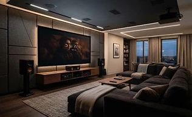
04Whole-home audio and cinema, hidden in walls and ceilings until the moment you want the room to come alive.
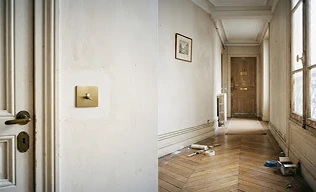
05Bringing intelligence to existing homes and heritage buildings — wireless-first, minimal disruption, no visible cables.
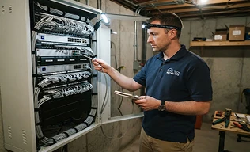
06Remote monitoring, calibration and upgrades. A system we stand behind for the life of your home.
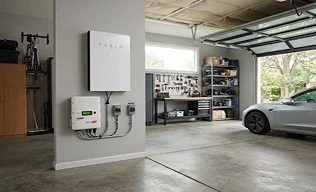
07Intelligent solar harvesting, battery bank orchestration, and micro-grid arbitrage during peak grid tariffs.
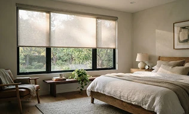
08Motorized silent pocket drapery and solar-tracking electrochromic glass for UV defense and acoustic insulation.
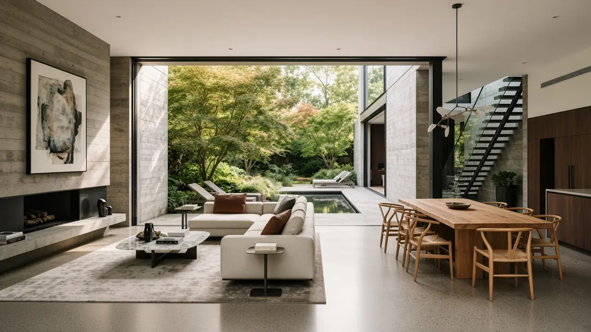
Concealed motorized pocket glass sliders integrated into cast concrete envelope.
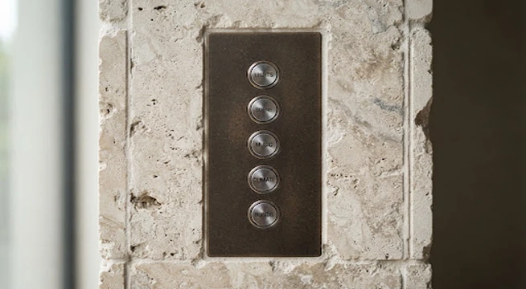
Milled from solid anodized billet aluminum, custom calibrated tactile buttons trigger nuanced multi-system macro scenes.
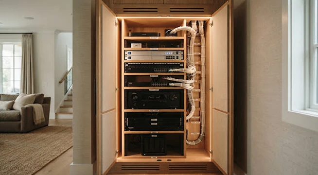
Centralized enterprise-grade low-voltage racks integrated inside acoustic millwork with silent thermal convective cooling.
Process
A walkthrough of your space and how you live in it.
A tailored system plan, wiring map and interface design.
Clean, discreet installation by our certified engineers.
Calibration, updates and monitoring for the life of your home.
Packages
$4,900
$14,500
Custom
FAQ
Yes. Lighting, shade, audio, climate, and access can be commissioned in a finished home. We confirm pathways on the first visit and keep the work wireless-first when the walls should stay closed.
Lutron, Crestron, Control4, and KNX, bridged into one interface so the rooms do not depend on a stack of apps.
An apartment is often a few days. A full house is scheduled around the build, with commissioning after the finishes are in.
The system stays local. Monitoring flags the fault, and an engineer recalibrates or replaces that device without taking the rest of the house offline.
When it speaks a standard we already bridge — DALI-2, KNX, or a supported audio and climate protocol — it stays in the plan. We confirm that on the consult.
Presence, access, and biometric data stay on the local bus. Daily control does not require anything to leave the house, and any cloud feature stays optional.